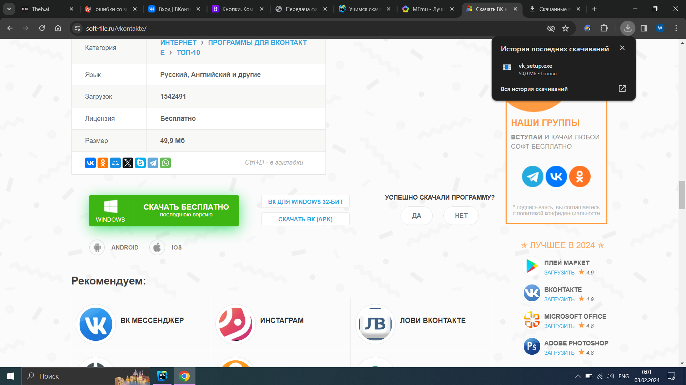
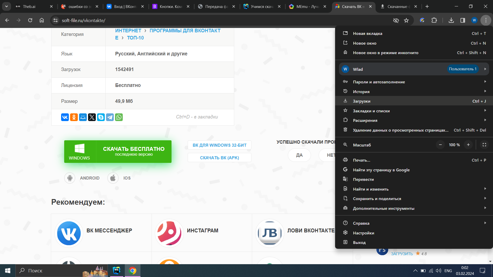
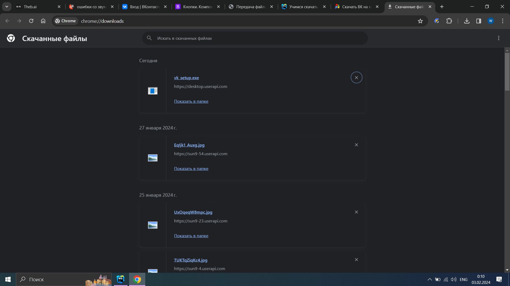
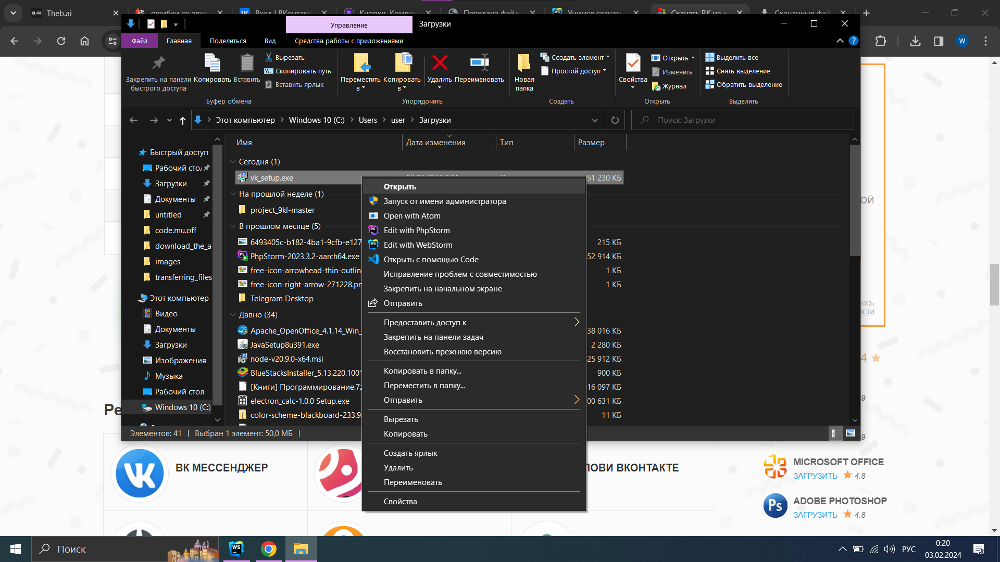
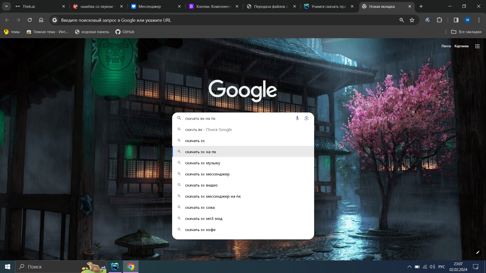

Безопасное скачивание приложения
Вместо того чтобы рассказывать, для чего нужно скачивать какие-то приложения, я покажу минусы и плюсы:
Плюсы скачивания приложений:
- Удобство: Приложения помогают нам выполнять различные задачи быстро и легко.
- Связь и общение: Благодаря приложениям мы можем легко обмениваться сообщениями, фотографиями и видео, независимо от расстояния, а также находиться на связи в социальных сетях.
- Работа офлайн: Некоторые приложения позволяют работать без подключения к интернету, что удобно в ситуациях с плохим сигналом или без доступа к сети.
Минусы скачивания приложений:
- Риск безопасности: Существует вероятность скачать вредоносное приложение, которое может навредить вашему устройству или привести к утечке информации.
- Ограниченные ресурсы: приложения могут привести к быстрому разряду батареи и заполнению памяти устройства. Из-за последнего, нельзя скачивать много приложений.
Приложения скачиваются через браузер.
Научимся скачивать приложение:
- Зайдем в браузер.
- В поисковой строке пишем приложение, которое хотим скачать на пк или ноутбук.
- Дальше ищем ссылку где было бы написано: Скачать ... на ПК.
- На сайте найдем кнопку: Скачать(Downland). 
- Наше приложенье отправилось в загрузки.
- Найдите в вашем браузере три точки и нажмите на них. Из списка выберите загрузки. 
- Вы увидите все скаченные файлы.
- Найдите приложение которое вы скачали и нажмите: показать в папке 
- Когда вы перейдете в проводник(Этот компьютер), кликните правой кнопкой мыши по приложению и выберете открыть 
- Ваш пк или ноутбук потребует согласия на установку, нажмите все такие кнопки: разрешить, далее, продолжить, финиш(finish) или завершить.
- Всеее, Приложение скачено и ожидает вас на рабочем столе.
Я возьму в пример: Вконтакте(VK).
